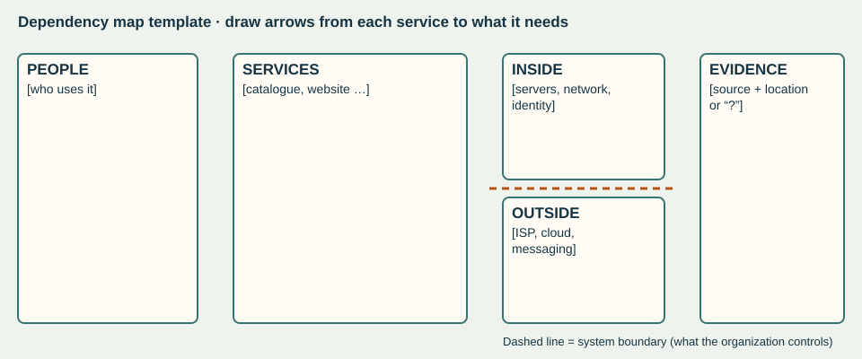
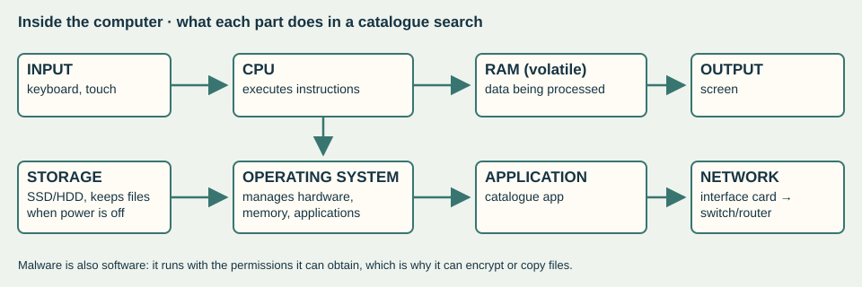
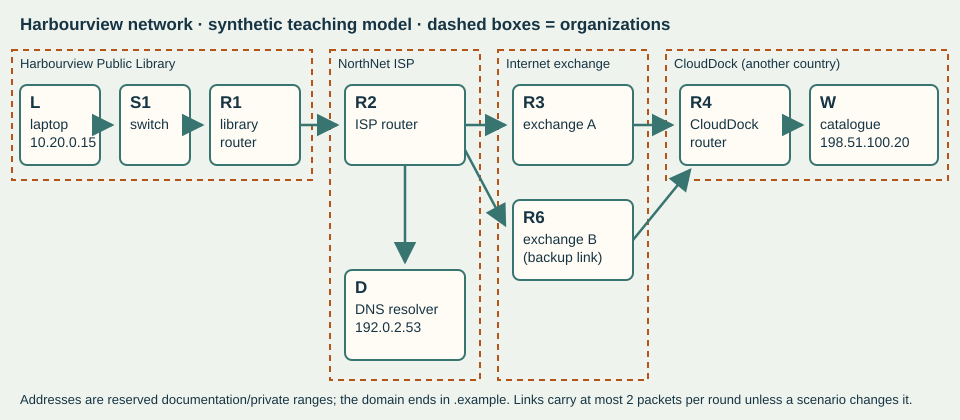
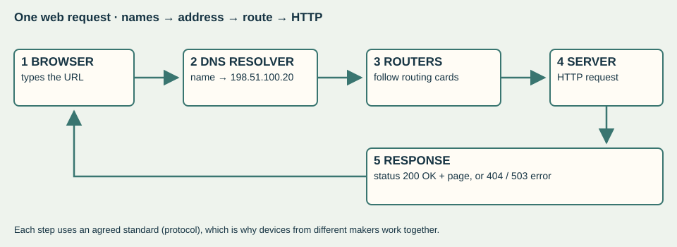

View your exported answer copy
If no download appeared, copy this text into your own document. This is not a submission.
Start here
On 28 October 2023 a ransomware attack took most of the British Library’s online systems offline. Its buildings stayed open, yet researchers lost access to much of the collection for months. Over the next eleven lessons you will learn how computers and networks work — well enough to explain exactly how a technical failure became a public-service failure, and what should be restored first.
Sprint question: How can a technical failure become a public-service failure?
Your route (dates follow the current plan and may move)
| Lesson | Planned slot | Focus | What happens to your work |
|---|---|---|---|
| ibds-26-s04-d01 | Mon 19 Oct | A service depends on a system | Dependency map checked · feedback |
| ibds-26-s04-d02 | Tue 20 Oct | Inside the computer | Trace checked · feedback |
| ibds-26-s04-d10 | Wed 21 Oct | Follow data through memory and storage | Model + fault explanations checked |
| ibds-26-s04-d03 | Thu 22 Oct | Weekly quiz + human packet network | Quiz ibds-26-quiz-w08 scored /12 |
| ibds-26-s04-d11 | Mon 26 Oct | Protocols, addressing and service failure | Three diagnoses checked · feedback |
| ibds-26-s04-d04 | Tue 27 Oct | Security and data protection | Comparison collected · feedback |
| ibds-26-s04-d05 | Wed 28 Oct | Weekly quiz + outage explanation | Quiz scored /12 · paragraph feedback only |
| ibds-26-s04-d06 | Thu 29 Oct | Source evidence and recovery priorities | Source cards + priority reasoning collected |
| ibds-26-s04-d07 | Fri 30 Oct | Synthesis across public services | Synthesis collected · checklist feedback, no mark |
| ibds-26-s04-d08 | Mon 2 Nov | Practice, then an independent hospital transfer | Transfer scored /8 · feedback |
| ibds-26-s04-d09 | Tue 3 Nov | Defence and oversight bridge | Defence observed · no mark |
No formal IA time is used in this sprint.
Reading (printed textbook pages — explanations and diagrams; embedded activities are optional)
- By Thu 22 Oct: pp. 92–103 (computing devices) and pp. 106–110 (network types and components).
- By Wed 28 Oct: pp. 111–124 (protocols, capacity, security, internet dilemmas) and pp. 69–71 (encryption, masking, erasure, blockchain).
- For the week of 2 Nov (next sprint’s quiz): pp. 146–156 and pp. 245–250.
Safe by design
Everything you run in class is a classroom model. Harbourview Public Library, NorthNet and CloudDock are invented. Every address is reserved for examples, and every log is fabricated for learning. You will never scan, test or disrupt a real network or account. Knowing how failures happen helps you explain and defend services; it is never permission to probe one.
Help you may use
In practice tasks you may use the shared Learning Studio Coach to clarify vocabulary or check your understanding of a model. Copy the context line from the page you are on; nothing is sent automatically.
Open the Learning Studio Coach ↗
Not allowed with any AI or Coach: the weekly quizzes, the independent hospital transfer, the fresh retry, and writing your source synthesis or defence. Your approved access arrangements always stay in place.
Downloads (lab assets ZIP)
- network-cards.csv, routing-table.csv, packet-cards.csv — human packet network
- failure-evidence-cards.csv — three synthetic failure scenarios
- recovery-tasks.csv and recovery-gantt.csv — recovery-priority lab
- backup-scenarios.csv, appointments-synthetic.csv — protection lab
- dependency-map-template.svg, harbourview-network.svg, computer-model.svg, request-response.svg
- source-cards.csv — for the source lessons
A service depends on a system
A library is not only a building. Its catalogue, website, reader accounts and ordering run on computers and networks — and some of those belong to other organizations.
Retrieval · 5 minutes
Explicit teaching · 12 minutes
| Term | Meaning | Examples (models and cited BL facts) |
|---|---|---|
| Standalone computing | A device works on its own; failure stays local | A reading-room exhibit screen with no network link |
| Networked computing | Devices share data and services over a network | Catalogue, reader registration and ordering on the Library network |
| Ubiquitous computing | Computing is embedded almost everywhere, often unnoticed | Door access, environment monitoring, card payments |
| Dependency | A service needs another component to work | Online catalogue needs servers, network and identity systems |
| Internet service provider (ISP) | Provides the connection to the internet | Jisc provides the Library’s internet access and monitors data movement |
| Hosting / cloud provider | Runs servers or software for another organization | Cloud-based finance and payroll kept working |
| Messaging service | Carries messages between people | The crisis team met by WhatsApp video call when email was down |
Source window · British Library, 8 March 2024. The review says the attack, claimed by the Rhysida ransomware group, was confirmed on Saturday 28 October 2023. The attackers copied about 600GB of files, encrypted data, and destroyed servers “to inhibit system recovery”. Premises, exhibitions and Reading Rooms stayed open. Research services were severely restricted, and cloud-based systems such as finance and payroll “functioned normally throughout”.
Lab · 30 minutes · map the dependencies
12 minutes: in groups, sort the service cards. Online catalogue search · ordering items for the Reading Room · the public website · reader registration · finance and payroll · email · building door access · exhibitions. For each, decide whether it depends on on-premise servers, cloud services, the network, or none of these. Use the review’s evidence where it exists; mark guesses with “?”.

10 minutes: draw your dependency map, with arrows from each service to the components it needs. Draw a boundary line showing which parts the Library controls, and which parts other organizations provide (ISP, cloud provider, messaging service).
8 minutes: explain why the exhibitions kept going while the catalogue did not, using the dependency idea. Then explain why Jisc, a cloud payroll provider and WhatsApp are three different kinds of provider.
Checkpoint: point to one dependency whose failure would interrupt a service, and one service that kept working because it did not share that dependency. If you cannot, trace one service step by step with your teacher.
Independent application · 15 minutes
Evidence: system boundary and dependency map. Checked in class with feedback. No mark.
Inside the computer
When a service “goes down”, something specific failed: a part, a program or an instruction. Knowing the difference is the first step to a good diagnosis.
Retrieval · 5 minutes
Explicit teaching · 12 minutes · the parts and their jobs

| Part | Job (textbook pp. 96–98) | If it fails… |
|---|---|---|
| CPU | Carries out and controls instructions | Nothing can be processed |
| RAM | Holds data temporarily while it is being processed | Running programs slow or crash; unsaved work is lost at power-off |
| Secondary storage (SSD/HDD) | Keeps programs and data long-term (non-volatile) | Files and applications cannot be loaded |
| Operating system | Manages hardware, software and memory; provides the interface | Applications cannot run or reach hardware |
| Application | Software for a specific purpose, such as the catalogue | That task stops; others may continue |
| Malware | Software written to steal data or damage systems | Unauthorized actions: encryption, copying, deletion |
Machines and servers. A kiosk is a personal computer used by the public. A server is a computer dedicated to managing network resources for many users. A data centre houses many servers. Choosing the role affects reliability, security and cost.
Lab · 30 minutes
Execution trace · 10 minutes. Put these eight steps of a catalogue search in order, and label the component responsible for each.
| Step (shuffled) | Component | Order |
|---|---|---|
| Builds a search request from the text | ||
| Executes the application’s machine instructions (fetch, decode, execute) | ||
| Holds the running application and the search text while it is being processed | ||
| Keeps the application files and cached records when the power is off | ||
| Keyboard sends the characters "flood maps" to the computer | ||
| Passes the key presses to the catalogue application that has focus | ||
| Sends the request packets to the network | ||
| The screen displays the result list |
Code levels · 6 minutes. The same calculation is written two ways. Using morning = 37 and afternoon = 45, trace the low-level version register by register. What value is stored? Why do programmers write the high-level version?
| High-level code | Simplified machine-style instructions |
|---|---|
| total_loans = morning + afternoon | LOAD R1, morning ; LOAD R2, afternoon ; ADD R1, R2 ; STORE R1, total_loans |
Fault sort · 14 minutes. Classify each fault card as a hardware fault, malicious software or a bad instruction (a software bug). Give the evidence in the card that decides it, and one test that would confirm your diagnosis.
| Card | What was observed | Your diagnosis + deciding evidence |
|---|---|---|
| K1 | The kiosk’s solid-state drive reports read errors and the application will not start after a restart. | |
| K2 | Files on a staff drive suddenly have a new extension and a note demands payment to unlock them. | |
| K3 | After an update, searching for a title with an apostrophe always crashes the catalogue app; other searches work. | |
| K4 | A laptop’s fan stops and the computer shuts down whenever a large scan is processed. |
Independent application · 15 minutes
Evidence: annotated component and execution trace, fault diagnoses. Checked in class with feedback. No mark.
Follow data through memory and storage
Where does your work live while you type it — and where does it go when you press Save? The answer explains lost work, slow computers and why faster chips don’t fix everything.
Retrieval · 5 minutes
Explicit teaching · 12 minutes
| Step of a file task | What happens | If the power fails here |
|---|---|---|
| Open record | Record copied from storage into RAM | Record safe in storage; nothing changed yet |
| Edit 3 fields | Changes exist only in RAM | Power cut now: the 3 edits are lost; stored record unchanged |
| Save | Application asks the OS to write the record to storage | Power cut during write: record may be incomplete — why systems keep copies |
| After save | Updated record persists in storage | Power cut now: edits survive |
Bottlenecks. A task runs only as fast as its slowest necessary step. If programs need more memory than the RAM has, the operating system moves some data out to storage (virtual memory), and everything slows because storage is much slower than RAM.
Faster chips have limits. Moore’s law was an observation about transistor counts, not a law of nature. Intel’s own page calls it “not a scientific law”. Quantum computers are not simply faster at everything: NIST explains that superposition does not allow an efficient “brute force” search over all possible solutions, and that quantum and ordinary computers will work together.
Intel · Moore’s Law · 18 September 2023 ↗
NIST · Quantum Computing Explained · 18 March 2025 ↗
Lab · 30 minutes
Model the file task · 10 minutes. Using role cards (Keyboard, CPU, RAM, Operating system, Catalogue app, SSD, Screen), act out a librarian opening a record, editing three fields and saving. Then replay it with a power cut after the edits and before Save. Record what survives.
Bottleneck calculation · 8 minutes. These are illustrative round-number transfer rates, not measurements of any product. Calculate how long it takes to load a 400 MB map scan from each place, using time = size ÷ rate. Then: a computer has 8 GB of RAM, and its open programs need 11 GB. How much must be moved to storage, and why does that slow things down?
| Location | Rate (MB/s, illustrative) | Time for the scan (s) |
|---|---|---|
| RAM | 10000 | |
| SSD | 500 | |
| HDD | 100 | |
| Network share (busy) | 25 |
Causal timeline · 12 minutes. Order the milestone cards, then draw at least three “because” arrows showing how one development made a later one possible. For example: agreed protocols made it possible for different networks to connect.
| Milestone card (shuffled) | Year | Your arrow: this enabled… |
|---|---|---|
| ARPANET switches to TCP/IP (1 January) | ||
| British Library ransomware attack (28 October) | ||
| CERN puts the web software in the public domain (30 April) | ||
| First ARPANET host-to-host message, UCLA to SRI | ||
| Gordon Moore observes transistor counts doubling (revised in 1975 to every two years) | ||
| Microprocessors put a CPU on one chip (textbook: fourth generation) | ||
| TX-2 (Massachusetts) linked to Q-32 (California) by dial-up: an early wide-area network experiment | ||
| Tim Berners-Lee invents the World Wide Web while working at CERN |
Textbook caution: p. 117 dates the first network message to 1965, from UCLA to Stanford. The Internet Society’s history records a 1965 dial-up link between computers in Massachusetts and California, and the first ARPANET host-to-host message in 1969, from UCLA to SRI. When sources disagree, check a primary account.
Independent application · 15 minutes
Your teacher will show two new fault descriptions. For each, explain which component is involved (CPU, RAM, storage, OS, application or malware) and trace the mechanism from cause to what the user experiences. Do this on your own.
Evidence: annotated model and two unseen fault explanations. Checked in class with feedback. No mark.
Human packet network
Today you are the network. Each of you is a device with a routing card. Your message will cross a library, an ISP, an internet exchange and a data centre in another country.
Weekly quiz · 12 minutes + 5 minutes correction
Ten items (/12) on pp. 92–103 and pp. 106–110, plus earlier learning. Closed-book, no AI or Coach, approved access arrangements apply. After collection, correct your copy in a different colour and write why each correction is right.
Explicit teaching · 8 minutes
| Network type | Scale | Harbourview example |
|---|---|---|
| PAN | Devices near one person | A librarian’s phone paired with a headset |
| LAN | One site | The library’s reading-room network (switch S1, router R1) |
| WAN | Across cities or countries | The path through NorthNet and the exchange to CloudDock |
| Client–server vs peer-to-peer | Where data is stored and served | The catalogue is client–server: laptops ask server W |
| Cloud | Services or management hosted off-site | CloudDock hosts the catalogue in another country |

Lab · 25 minutes · the human packet network
| Card | Device | Role | Address | Organization | Where |
|---|---|---|---|---|---|
| L | Reading-room laptop | client | 10.20.0.15 | Harbourview Public Library | Harbourview (library building) |
| S1 | Library switch | switch | — | Harbourview Public Library | Harbourview (library building) |
| R1 | Library edge router | router | 10.20.0.1 / 203.0.113.10 | Harbourview Public Library | Harbourview (library building) |
| R2 | NorthNet ISP router | router | — | NorthNet (internet service provider) | Regional ISP centre |
| R3 | Exchange router A | router | — | Internet exchange | National exchange point |
| R6 | Exchange router B (backup link) | router | — | Internet exchange | National exchange point |
| R4 | CloudDock hosting router | router | — | CloudDock (hosting provider) | Data centre in another country |
| W | Catalogue web server | server | 198.51.100.20 | CloudDock (hosting provider) | Data centre in another country |
| D | NorthNet DNS resolver | dns | 192.0.2.53 | NorthNet (internet service provider) | Regional ISP centre |
| Router card | If the destination starts with… | Send to |
|---|---|---|
| S1 | 10.20.0.0/24 | deliver on this network |
| S1 | anything else | R1 |
| R1 | 10.20.0.0/24 | S1 |
| R1 | anything else | R2 |
| R2 | 10.20.0.0/24 | R1 |
| R2 | 203.0.113.0/24 | R1 |
| R2 | 198.51.100.0/24 | R3 |
| R2 | 192.0.2.0/24 | D |
| R3 | 198.51.100.0/24 | R4 |
| R3 | 10.20.0.0/24 | R2 |
| R3 | 203.0.113.0/24 | R2 |
| R6 | 198.51.100.0/24 | R4 |
| R6 | 10.20.0.0/24 | R2 |
| R6 | 203.0.113.0/24 | R2 |
| R4 | 198.51.100.0/24 | W |
| R4 | anything else | R3 |
Rules. (1) The laptop splits the search request into 6 numbered packets, each labelled From 10.20.0.15 To 198.51.100.20 with its number. (2) Each round, every link carries at most 2 packets, lowest number first. A packet moves one hop per round. (3) Each router looks up the destination in its card and passes the packet to the listed next device. (4) The server rebuilds the message when all packets have arrived, in any order.
Run 1 · 8 minutes: normal network. Record the round in which the last packet reaches W.
Run 2 · 7 minutes: bottleneck. The R2–R3 link can now carry only 1 packet per round. Predict first, then run it and record the round.
Run 3 · 5 minutes: reroute. The R2–R3 link is removed entirely. What single routing-card change at R2 lets packets travel via R6? Try it.
| Run | Your prediction (round) | Actual last-packet round | What explains the difference |
|---|---|---|---|
| 1 Normal | |||
| 2 Bottleneck | |||
| 3 Reroute |
Debrief · 5 minutes: compare predictions with results, then trace which organizations and countries the packets crossed.
Checkpoint: the internet (routers, links, protocols) is not the web. The web is the websites and services, such as this catalogue, reached across the internet with a browser. Which cards in our network are “internet” and which are “web service”?
Independent application · 15 minutes
Evidence: quiz ibds-26-quiz-w08 scored /12. Packet journey and bottleneck explanation checked with feedback (no mark).
Protocols, addressing and service failure
“The catalogue is down” can mean very different things. The evidence tells you which — if you know how names, addresses, routes and requests work.
Retrieval · 5 minutes
Explicit teaching · 12 minutes · one web request

| Idea | What it does | Harbourview example |
|---|---|---|
| Protocol | Agreed rules for formatting, sending and receiving data | TCP/IP, HTTP, DNS |
| IP address | Logical numeric address for a device on a network | Catalogue server 198.51.100.20 |
| DNS | Translates a name into an IP address | catalogue.harbourview-library.example → 198.51.100.20 |
| URL | Unique address of a web resource | https://catalogue.harbourview-library.example/search?q=flood+maps |
| HTTP / HTTPS | How browser and server exchange web resources; HTTPS encrypts the exchange | GET request → “200 OK” or an error status |
| Bandwidth | Maximum amount of data a link can carry at once | R2–R3 carried 2 packets per round |
| Compression | Re-encodes data in fewer bits; lossless can be fully restored | A scanned page row |
Standards make interoperability possible. HTTP’s meaning is defined in an internet standard published by the IETF, RFC 9110. It defines status codes, including 404 (no current representation found) and 503 (temporarily unable to serve, for example because of maintenance or overload). Anyone can build a browser or server that follows it.
Internet Engineering Task Force · RFC 9110: HTTP Semantics · June 2022 ↗
Lab · 30 minutes · three synthetic failures
Warm-up · 5 minutes, compression. A 24-pixel row of a scanned page reads WWWWWWWWBBBBWWWWWWWWBBWW (W = white, B = black). Worked example on different data: GGGGGRRRGGGG becomes 5G3R4G (12 symbols → 6). Encode the scanned row using run-length encoding. How many symbols does it save? Can the original be rebuilt exactly?
Diagnose · 20 minutes. Each group receives three evidence cards (also in failure-evidence-cards.csv). Each describes what users and staff observed during a different synthetic outage. For each scenario decide which it is: a missing route, a name-lookup (DNS) failure or an overloaded service. Cite at least two pieces of evidence, and name the evidence that rules out each alternative.
| Scenario | Your diagnosis | Two pieces of supporting evidence | Evidence that rules out the alternatives |
|---|---|---|---|
| 1 | |||
| 2 | |||
| 3 |
Evidence card · Scenario 1 (fabricated)
- 09:05 Readers: the catalogue page keeps loading, then shows “took too long to respond”.
- 09:06 Staff can open other websites normally.
- 09:07 IT: the name catalogue.harbourview-library.example resolves to 198.51.100.20.
- 09:08 IT hop log (synthetic): L → S1 → R1 → R2 → R3, then no further reply.
- 09:10 CloudDock: server W is running with normal load and is receiving no requests from the library.
Evidence card · Scenario 2 (fabricated)
- 13:20 Browser message: “server name could not be found” for catalogue.harbourview-library.example.
- 13:21 IT test tool opens the page by typing the address 198.51.100.20 directly: it loads.
- 13:22 Newly visited websites also fail by name; recently visited ones still load.
- 13:25 NorthNet notice: “issue affecting our name-resolution service”.
- 13:26 CloudDock: server W normal load.
Evidence card · Scenario 3 (fabricated)
- 16:00 A city-wide school assignment is due at 17:00.
- 16:02 Some catalogue pages load after 20+ seconds; many show “503 Service Unavailable”.
- 16:03 The name catalogue.harbourview-library.example resolves normally.
- 16:04 CloudDock: server W receiving about 900 requests per second; it can process about 300.
- 16:05 A staff laptop inside the library also gets 503 some of the time.
Real comparison · 5 minutes. Engineering at Meta explained on 5 October 2021 that a maintenance command cut its data centres off from its backbone network. Its DNS servers then withdrew the routing announcements that told the internet where to find them. Which of our three failure types does this combine?
Engineering at Meta · More details about the October 4 outage · 5 October 2021 ↗
Independent application · 15 minutes
Evidence: packet path and justified diagnosis of three synthetic failures. Checked in class with feedback. No mark.
Security and data protection
Different protections solve different problems. A password does not help after the data has been copied; a backup does not help if it was encrypted too.
Retrieval · 5 minutes
Explicit teaching · 12 minutes · a service threat model
| Protection | What it protects against | What it does not do |
|---|---|---|
| Authentication (MFA) | Someone using stolen or guessed credentials | Does not stop malware already inside |
| Encryption | Reading data that has been intercepted or copied | Does not stop data being deleted or encrypted by attackers |
| Masking | Exposing real identities in test or shared data | Masked data cannot be used where real identity is needed |
| Erasure (not deletion) | Recovering old data from discarded devices | Deleted files can often be recovered |
| Ledger integrity (blockchain) | Undetected changes to a shared record | Does not make the recorded facts true, or keep them secret |
| Tested offline backups | Permanent loss after encryption or destruction | Does not provide the servers to restore onto |
Ransomware and social engineering. The review says the most likely route in was compromised privileged credentials, “possibly via a phishing or spear-phishing attack”. It adds that the exact point and method of entry “cannot be stated with certainty”. The attack then copied data, encrypted systems and destroyed servers. The Canadian Cyber Centre’s ransomware playbook advises storing backups offline and testing restores regularly.
Lab · 30 minutes · classroom models only
Station A · masking (7 min). Mask the synthetic appointment table (appointments-synthetic.csv) so that a software tester can check the clinic schedule without seeing who the patients are. Which fields must stay usable?
| Name | Health card (fake) | Clinic | Time |
|---|---|---|---|
| Amara Okafor | 4120-555-018 | Cardiology | 09:10 |
| Luc Tremblay | 4120-555-102 | Radiology | 09:40 |
| Priya Nair | 4120-555-233 | Cardiology | 10:05 |
| Tomasz Wolski | 4120-555-347 | Orthopaedics | 10:30 |
| Hana Sato | 4120-555-489 | Radiology | 11:15 |
| Diego Ramos | 4120-555-560 | Pathology draw | 11:40 |
Station B · toy ledger (8 min). A TOY check (not secure) links each record to the one before: check = (previous check × 31 + sum of character codes) mod 997. Block 1’s check is 208. Your teacher gives the codes. Explain why editing block 2 would change every later check, and what that does and does not prove.
Station C · backups (8 min). The attack happened on day 30. Use backup-scenarios.csv to compare backups B1–B3. How many days of changes would each lose? Which could actually be restored? What does the British Library’s experience add? It had secure copies of its collections but “lack of viable infrastructure on which to restore it”.
| Backup | Type | Last copy (day) | Offline? | Last restore test |
|---|---|---|---|---|
| B1 | Online copy on the same network, updated hourly | 30 | no | 30 days ago |
| B2 | Offline weekly copy | 24 | yes | 420 days ago |
| B3 | Offline daily copy with monthly restore test | 29 | yes | 12 days ago |
Station D · spot the social engineering (7 min). Inspect the synthetic message on your card. It is invented and addressed to no real person. List three warning signs, and the safe action a staff member should take. You are identifying warning signs, not writing messages.
Synthetic message: From: IT Service Desk <it-support@harbourview-library-help.example> · Subject: URGENT password expiry — action within 30 minutes · “Your library account will be locked today. Confirm your password here to keep access: harbourview-library-help.example/verify. Contractors must also confirm server access.”
Independent application · 15 minutes
Evidence: protection and recovery comparison. Collected with the workbook, with focused feedback. No mark.
Weekly quiz and outage explanation
First the quiz. Then the key move of this sprint: linking a technical dependency, step by step, to what the public actually lost.
Weekly quiz · 12 minutes + 5 minutes correction
Ten items (/12) on pp. 111–124 and pp. 69–71, including four on earlier learning. Closed-book, no AI or Coach, approved access arrangements apply. Correct your copy after collection.
Explicit teaching · 8 minutes · a causal chain
Technical event → component affected → service that depended on it → what people could no longer do → who was affected most → how long, and why
Distinguish an impact (an immediate consequence) from an implication (a longer-term or wider consequence).
Lab · 25 minutes · the British Library’s impact table
The review rates each of the Library’s public purposes. Custodianship and Research were “RED / AMBER”; Culture was “GREEN”, with exhibitions ahead of target. It says the physical collection available to readers was limited to about 50% by volume, and a searchable catalogue returned on 15 January 2024. A November 2025 update announced a new catalogue from 15 December 2025.
British Library · Restoring our services – November 2025 update · 21 November 2025 ↗
12 minutes: build two causal chains, one for Research (RED / AMBER) and one for Culture (GREEN). Why did one purpose fail and the other survive the same attack?
8 minutes: whose priorities differ? A researcher, a member of staff whose personal data was copied, and the Library’s board want different things from the recovery. Identify one value each would put first.
5 minutes: which organizations had authority here? The National Cyber Security Centre, the Information Commissioner’s Office, NCC Group (specialist advisers) and the Library’s own board appear in the review. Classify each as government agency, regulator, private company or institutional governance.
Independent application · 15 minutes · Paper 1 practice
Practice question (feedback only, no mark): Explain how the destruction of on-premise servers reduced public access to the British Library’s research services, even though its buildings remained open. [6]
Success criteria: name the technical event and component accurately; trace each dependency to a service; connect the lost service to what researchers could not do; use precise evidence from the review (dates or figures); separate what the review states from your inference.
Evidence: quiz ibds-26-s04-d05 scored /12 (eight multiple choice + two short responses confirmed by your teacher). The paragraph gets written feedback and no mark; it is not added to the /12.
Source evidence and recovery priorities
An institution explaining its own crisis and a government agency assessing threats are different sources. Read each for what it reports, what it infers and what it leaves out — then decide what to restore first.
Retrieval · 5 minutes
Explicit teaching · 12 minutes · reported fact, inference, missing
| Label | Test | Example from the British Library review |
|---|---|---|
| Reported fact | Stated as observed or recorded, with a time, number or record | “440GB” of data left the network at 1.30am on 28 October (reported by Jisc) |
| Inference | A conclusion the author draws; look for “likely”, “believe”, “appears” | The absence of MFA “likely” contributed to entry |
| Stated uncertainty | The author says what cannot be known | The exact point of entry cannot be stated with certainty |
| Missing information | What a reader would need but the source does not give | The full cost of recovery is not yet calculated |
Source window · Canadian Centre for Cyber Security, National Cyber Threat Assessment 2025–2026 (released 30 October 2024). It calls ransomware the top cybercrime threat to Canada’s critical infrastructure. “By one estimate”, it says, ransomware incidents affecting the healthcare sector have “nearly doubled since 2022”, and it names the 2024 attack on the pathology firm Synnovis. It matches words such as “likely” and “almost certainly” to percentage ranges, which it says are “not derived via statistical analysis”. It is a threat assessment, not a report on any one incident.
Lab · 30 minutes
Source cards · 12 minutes. Complete source-cards.csv for the British Library review and the Cyber Centre assessment: origin, date, purpose, audience, main claim, one reported fact, one inference, one missing piece. Where does the British Library’s account agree with the external guidance, and where does it add something the guidance cannot know?
Recovery-priority lab · 18 minutes. Harbourview Library (synthetic) must rebuild eight systems with two rebuild teams. A task can start only when its prerequisites are finished; each team works on one task at a time. Schedule the tasks using Priority A, then Priority B, on the Gantt template (recovery-gantt.csv). Record the day each public service returns.
| Task | Days | Needs first | Public-facing? |
|---|---|---|---|
| NET · New segmented network | 3 | — | no |
| IDM · Identity service with MFA | 2 | NET | no |
| BKV · Validate backups | 2 | NET | no |
| WEB · Public website | 2 | IDM | yes |
| CAT · Catalogue search | 3 | IDM, BKV | yes |
| PAY · Online payments | 2 | WEB | yes |
| LOAN · Reader registration and loans | 4 | CAT | yes |
| LDEP · Legal deposit intake (statutory) | 5 | BKV | no |
| Priority order | Sequence |
|---|---|
| A · public access first | NET → IDM → BKV → WEB → CAT → LOAN → PAY → LDEP |
| B · statutory duty and data first | NET → BKV → IDM → LDEP → CAT → WEB → LOAN → PAY |
Checkpoint: why can no public service return before day 6 under either order? If you cannot answer, trace the prerequisites back from CAT.
Independent application · 15 minutes
Evidence: source cards and prioritized recovery reasoning. Collected with the workbook, with focused feedback. No mark.
Synthesis across public services
A national library and a hospital pathology service were both hit by ransomware. Compare them by theme — continuity, cost and trust — not source by source.
Retrieval · 5 minutes
Explicit teaching · 12 minutes · writing by theme
A synthesis states a relationship between sources: they agree, they differ, or one explains the other. Each claim is anchored in specific evidence, and each source’s limits are named. A paragraph that summarizes Source 1 and then Source 2 is not yet a synthesis.
Source windows
Source 1 · British Library review, 8 March 2024 (institution). Premises and Reading Rooms stayed open. Research access was severely restricted, and the catalogue returned in searchable form on 15 January 2024. The review says the need to control information tightly in the early stages “caused frustration for researchers” and affected staff morale. Recovery costs are still being calculated. Previously planned investment will be brought forward.
Source 2 · NHS England, Synnovis cyber incident (update of 10 November 2025). Synnovis, a pathology service processing blood tests, was hit by ransomware on 3 June 2024. The attack caused “delays to over 11,000 outpatient and elective procedure appointments” in South-East London. Services were fully restored by December 2024. Criminals published stolen data on 20 June 2024.
NHS England · Synnovis cyber incident · update of 10 November 2025 ↗
Source 3 · NHS England — London, 14 June 2024. It says urgent and emergency services remained available. Hospitals arranged mutual aid, rerouted GP blood tests and increased “universal” blood stocks. It began publishing “unverified management information” weekly, “in the interests of the public having a clearer picture”. That first week, more than 800 planned operations and 700 outpatient appointments were rearranged.
These are short original summaries with brief quotations. Open the links to check the wording. Figures labelled unverified or provisional stay labelled when you use them.
Lab · 30 minutes
Theme grid · 22 minutes: sort evidence from the three sources into the grid. For each theme, decide the relationship.
| Theme | British Library evidence | NHS / Synnovis evidence | Relationship (agree / differ / explains) |
|---|---|---|---|
| Continuity: what kept running, and how | |||
| Cost: to users, staff and the organization | |||
| Trust: information and openness |
Challenge · 8 minutes: an outage at a library and one at a hospital are not the same kind of harm. Where does the comparison break down? What does the Cyber Centre’s finding about the healthcare sector add?
Independent synthesis · 15 minutes · collected
Using Sources 1 and 2 (and 3 if useful), compare and contrast how the British Library and the NHS services maintained continuity and public trust during their outages. Organize by theme. State one limitation of each source.
Checklist (feedback, not marks): an accurate claim from each source · an explicit relationship · specific supporting evidence · a limitation of each source (purpose, date, provisional data) · an inference that stays within the evidence.
Evidence: assessment ibds-26-s04-d07. Collected and unscored, with checklist feedback within five teaching days and a fresh short retry after return.
Practice, then an independent hospital transfer
You will practise diagnosing and prioritizing on Harbourview’s logs. Then you will show you can do it alone, on a hospital case you have not seen.
Retrieval · 5 minutes
Explicit teaching · 12 minutes · evaluating a diagnosis and a priority
- Test the claim against the evidence. Which observations does it explain? Which does it fail to explain?
- Name a plausible alternative, and the evidence that weakens it.
- Trace the consequence for people. In health contexts, time-critical care and safety come before convenience, but workarounds and capacity matter.
- Weigh a counter-perspective honestly. Reach a judgment and say what would change it.
Practice · 25 minutes · Harbourview logs (synthetic)
Harbourview’s IT lead says: “It’s a DNS failure; fix DNS first, then restore online payments because the library is losing income.” Evidence: the catalogue name resolves correctly on staff laptops · traffic reaches the server · pages that do load show “503 Service Unavailable” during a school-assignment deadline · the reader help desk reports queues of students unable to finish research · online payments work normally.
Check with the success criteria before the independent task. Do not write about the hospital case in this box. You will not see it until the sitting.
Independent transfer · 20 minutes · collected and scored /8
Your teacher will hand out an unseen hospital case with a dependency diagram and incident evidence. Work alone, closed-book; no AI, Coach or notes. Approved access arrangements apply. The task is not in this workbook.
Before next week’s quiz, read pp. 146–156 and pp. 245–250.
Evidence: practice checked in class. The unseen transfer is assessment ibds-26-s04-d08, scored /8 with feedback within five teaching days and a fresh retry after return. It is excluded from predicted component grades.
Defence and oversight bridge
Defend a causal link and admit its uncertainty. Then look ahead: where should a human supervise an automated decision in the same system?
Retrieval · 5 minutes
Explicit teaching · 12 minutes · from ARPANET to things
| Development | What it added | Not the same as |
|---|---|---|
| Early networking (ARPANET, 1969; TCP/IP, 1983) | Linked computers and networks with shared protocols | The web |
| World Wide Web (invented at CERN 1989; public-domain software 1993) | Linked documents reached by URL, HTTP and HTML in a browser | The internet it runs on |
| Social platforms (Web 2.0) | User-generated content at scale | The web as a whole |
| Internet of things | Sensors and devices sharing data, often automatically | Social media |
CERN · The birth of the Web · undated; checked 27 September 2026 ↗
An automated decision in the British Library case. The review reports that at 00:21 on 26 October 2023 the monitoring system automatically blocked suspect activity. Staff were alerted at 01:15, extended the block and ran a scan that found nothing. After further checks, they reset a password and unblocked the account later that day. In hindsight, the Library believes that activity was hostile reconnaissance.
Lab · 30 minutes
Defence rounds · 15 minutes. With a partner, defend one causal link from your work this sprint. For example: “legacy network design increased the damage”. State the evidence, one uncertainty, and what would change your mind. Your partner asks one challenge question. Your teacher samples some defences; others hand in a written explanation.
Oversight mapping · 15 minutes. On your dependency map, mark every point where an automated system makes or recommends a decision: monitoring blocks, automatic failover, restore-order tools. For each, decide what a human should check, when, and with what information.
Independent application · 15 minutes
Evidence: the defence (ibds-26-s04-d09) is observed and collected with one evidence-linked comment and no mark. The oversight question and map are collected with the workbook.
Reflection and next target
Name what you can now explain, the evidence that shows it, and one precise next step.
Reflection is your own evidence of learning. It is not a mark and does not replace your teacher’s judgment.